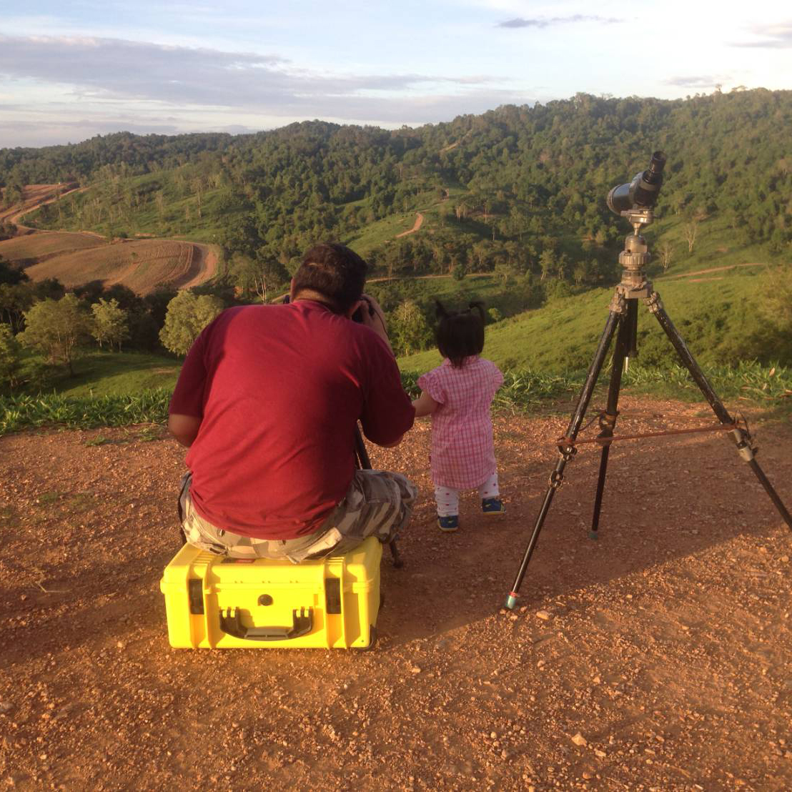

จับภาพความงามของนก สัตว์ป่า และธรรมชาติไทย
ผ่านเลนส์และหัวใจที่รักธรรมชาติ
Capturing Thailand's birds, wildlife and nature
through the lens and a deep love for the wild.
ภาพนก สัตว์ป่า และธรรมชาติที่บันทึกไว้จากทั่วประเทศไทย
Birds, wildlife and nature photographed across Thailand


รายชื่อนกทั้งหมดที่ BBirdNok เคยถ่ายภาพไว้
All bird species photographed by BBirdNok
| ชื่อไทยThai Name | ชื่อวิทยาศาสตร์Scientific Name | ชื่ออังกฤษEnglish Name | สถานะ IUCNIUCN Status | ภาพPhotos |
|---|---|---|---|---|
| นกกระเบื้องผา | Monticola solitarius | Blue Rock Thrush | LC | |
| นกขุนแผนหัวแดง | Harpactes erythrocephalus | Red-headed Trogon | LC | |
| นกจาบคาเคราน้ำเงิน | Nyctyornis athertoni | Blue-bearded Bee-eater | LC | |
| นกกางเขนน้ำหลังเทา | Enicurus schistaceus | Slaty-backed Forktail | LC | |
| นกปลีกล้วยลาย | Arachnothera magna | Streaked Spiderhunter | LC | |
| นกยอดข้าวหางแพนลาย | Cisticola juncidis | Zitting Cisticola | LC | |
| นกตะขาบทุ่ง | Coracias benghalensis | Indian Roller | LC | |
| นกจาบคาเล็ก | Merops orientalis | Asian Green Bee-eater | LC | |
| นกกินปลีหางยาวเขียว | Aethopyga nipalensis | Green-tailed Sunbird | LC | |
| นกเขนเทาหางแดง | Phoenicurus fuliginosus | Plumbeous Water Redstart | LC | |
| นกจับแมลงสีฟ้า | Cyornis hainanus | Hainan Blue Flycatcher | LC | |
| นกเดินดงลายเสือ | Zoothera dauma | Scaly Thrush | LC | |
| นกโกโรโกโส | Carpococcyx renauldi | Coral-billed Ground Cuckoo | VU | |
| นกเขนน้อยหางแดง | Larvivora sibilans | Rufous-tailed Robin | LC | |
| นกกระเบื้องคอขาว | Monticola gularis | White-throated Rock Thrush | LC | |
| นกกระเต็นน้อยสามนิ้วหลังดำ | Ceyx erithaca | Oriental Dwarf Kingfisher | LC | |
| นกกระทาทุ่ง | Francolinus pintadeanus | Chinese Francolin | LC | |
| นกจับแมลงจุกดำ | Hypothymis azurea | Black-naped Monarch | LC | |
| นกกระเต็นใหญ่ธรรมดา | Pelargopsis capensis | Stork-billed Kingfisher | LC | |
| นกกระจาบทอง | Ploceus hypoxanthus | Asian Golden Weaver | NT | |
| นกยางลายเสือ | Gorsachius melanolophus | Malayan Night Heron | LC | |
| นกอัญชันหางดำ | Zapornia bicolor | Black-tailed Crake | LC | |
| นกกะรองทองแก้มขาว | Leiothrix argentauris | Silver-eared Mesia | LC | |
| นกปีกลายตาขาว | Actinodura ramsayi | Spectacled Barwing | LC | |
| นกศิวะหางสีตาล | Actinodura strigula | Bar-throated Minla | LC | |
| นกหัวขวานแคระจุดรูปหัวใจ | Hemicircus canente | Heart-spotted Woodpecker | LC | |
| นกกก | Buceros bicornis | Great Hornbill | VU | |
| นกปรอดหัวตาขาว | Pycnonotus flavescens | Flavescent Bulbul | LC | |
| นกจาบคาเคราแดง | Nyctyornis amictus | Red-bearded Bee-eater | LC | |
| เหยี่ยวต่างสี | Nisaetus cirrhatus | Changeable Hawk-Eagle | LC | |
| นกพญาปากกว้างท้องแดง | Cymbirhynchus macrorhynchos | Black-and-red Broadbill | LC | |
| นกพญาปากกว้างอกสีเงิน | Serilophus lunatus | Silver-breasted Broadbill | LC | |
| นกตีทอง | Psilopogon haemacephalus | Coppersmith Barbet | LC | |
| นกกระสาแดง | Ardea purpurea | Purple Heron | LC | |
| เหยี่ยวแดง | Haliastur indus | Brahminy Kite | LC | |
| นกอีโก้ง | Porphyrio poliocephalus | Grey-headed Swamphen | LC | |
| นกแต้วแล้วอกเขียว | Pitta sordida | Hooded Pitta | LC | |
| นกอีเสือสีน้ำตาล | Lanius cristatus | Brown Shrike | LC | |
| นกกระจิบหญ้าสีเรียบ | Prinia inornata | Plain Prinia | LC | |
| นกจับแมลงอกส้มท้องขาว | Cyornis sumatrensis | Indochinese Blue Flycatcher | LC | |
| นกกระจอกใหญ่ | Passer domesticus | House Sparrow | LC | |
| นกแอ่นทุ่งใหญ่ | Glareola maldivarum | Oriental Pratincole | LC | |
| นกกระทุง | Pelecanus philippensis | Spot-billed Pelican | NT | |
| นกนางนวลแกลบเคราขาว | Chlidonias hybrida | Whiskered Tern | LC | |
| นกกินเปี้ยว | Todiramphus chloris | Collared Kingfisher | LC | |
| นกยอดหญ้าสีดำ | Saxicola maurus | Eastern Stonechat | LC | |
| นกกระเต็นน้อยธรรมดา | Alcedo atthis | Common Kingfisher | LC | |
| นกจับแมลงดำอกขาว | Ficedula westermanni | Little Pied Flycatcher | LC | |
| นกนิลตาวาท้องสีส้ม | Niltava sundara | Rufous-bellied Niltava | LC | |
| นกนางนวลหลังดำพันธุ์รัสเซีย | Larus heuglini | Heuglin's Gull | LC | |
| นกแว่นตาขาวสีทอง | Zosterops palpebrosus | Indian White-eye | LC | |
| นกกระติ๊ดแดง | Amandava amandava | Red Avadavat | LC | |
| นกจับแมลงคอน้ำตาลแดง | Cyornis whitei | Hill Blue Flycatcher | LC | |
| นกจาบดินอกลาย | Pellorneum ruficeps | Puff-throated Babbler | LC | |
| นกกางเขนดง | Copsychus malabaricus | White-rumped Shama | LC | |
| นกจับแมลงสีคราม | Eumyias thalassinus | Verditer Flycatcher | LC | |
| นกจับแมลงสีน้ำตาล | Muscicapa dauurica | Asian Brown Flycatcher | LC | |
| นกเดินดงหัวสีส้ม | Geokichla citrina | Orange-headed Thrush | LC | |
| นกแต้วแล้วสีน้ำเงิน | Hydrornis cyaneus | Blue Pitta | LC | |
| นกเขนน้อยไซบีเรีย | Larvivora cyane | Siberian Blue Robin | LC | |
| เหยี่ยวดำ | Milvus migrans | Black Kite | LC | |
| นกจาบคาหัวสีส้ม | Merops leschenaulti | Chestnut-headed Bee-eater | LC | |
| นกแต้วแล้วนางฟ้า | Pitta nympha | Fairy Pitta | VU | |
| นกอัญชันป่าขาแดง | Rallina fasciata | Red-legged Crake | LC | |
| นกกาน้ำใหญ่ | Phalacrocorax carbo | Great Cormorant | LC | |
| นกกาน้ำปากยาว | Phalacrocorax fuscicollis | Indian Cormorant | LC | |
| นกกระแตผีธรรมดา | Burhinus indicus | Indian Thick-knee | LC | |
| นกกินปลีคอแดง | Aethopyga siparaja | Crimson Sunbird | LC | |
| นกเขนหางแดง | Phoenicurus auroreus | Daurian Redstart | LC | |
| นกกินปลีคอดำ | Aethopyga saturata | Black-throated Sunbird | LC | |
| นกจับแมลงดำอกสีส้ม | Ficedula mugimaki | Mugimaki Flycatcher | LC | |
| นกเดินดงญี่ปุ่น | Turdus smithi | Japanese Thrush | LC |
เรื่องราวจากป่า เคล็ดลับการถ่ายภาพ และข้อมูลนกไทย
Stories from the field, photography tips, and Thai bird knowledge
จากดอยอินทนนท์ถึงเขาใหญ่ — แหล่งถ่ายภาพนกที่ดีที่สุดที่ BBirdNok แนะนำ
From Doi Inthanon to Khao Yai — the best birding locations BBirdNok recommends.
อ่านต่อ →Read more →รีวิวจากประสบการณ์จริง — AF speed, burst rate และทุกสิ่งที่ทำให้ Sony A1 โดดเด่น
A real-world review — AF speed, burst rate and everything that makes the Sony A1 exceptional.
อ่านต่อ →Read more →นกกัวร์นีย์พิตตา นกเงือกกรามช้าง และนกหายากที่ยังพบได้ในป่าไทย
Gurney's Pitta, Great Hornbill and more rare species still findable in Thailand's forests.
อ่านต่อ →Read more →
BBirdNok คือช่างภาพธรรมชาติชาวไทย ผู้หลงใหลในโลกของนกและสัตว์ป่า ด้วยความรักในธรรมชาติและความสวยงามของสิ่งมีชีวิตในป่าไทย BBirdNok ออกเดินทางไปยังป่าและพื้นที่ชุ่มน้ำทั่วประเทศ เพื่อบันทึกภาพความงามที่หาชมได้ยาก ทุกภาพคือช่วงเวลาที่ต้องรอคอย สังเกต และเข้าใจธรรมชาติอย่างแท้จริง
BBirdNok is a Thai nature photographer deeply passionate about birds and wildlife. Driven by love for Thailand's wild habitats, BBirdNok journeys through forests, wetlands and national parks across the country to capture rare and breathtaking moments. Every photograph is the result of patience, observation and a deep respect for nature.
หากสนใจงานภาพ ต้องการสอบถามเกี่ยวกับการถ่ายภาพ หรืออยากแชร์ประสบการณ์การดูนก ยินดีรับฟังเสมอครับ
Interested in prints, have questions about bird photography, or want to share birding experiences — always happy to connect.